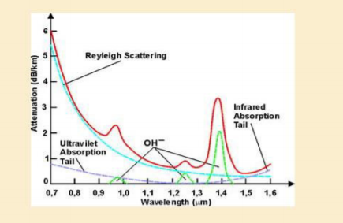

Theory:
The attenuation or transmission loss of optical fibers has proved to be one of the most important factors in bringing about their wide acceptance in telecommunications. As channel attenuation largely determined the maximum transmission distance prior to signal restoration, optical fiber communications became especially attractive when the transmission losses of fibers were reduced below those of the competing metallic conductors (less than 5 dB/ km ).
Signal attenuation within optical fibers, as with metallic conductors, is usually expressed in the logarithmic unit of the decibel.
The decibel, which is used for comparing two power levels, may be defined for a particular optical wavelength as the ratio of the input (transmitted) optical power Pi into a fiber to the output (received) optical power Po from the fiber as:
Number of decibels (dB) = 10 log10 (Pi / Po)
Conversion of dB to numerical values can be obtained using the relationship:
(Pi / Po) = 10(db / 10)
In optical fiber communications the attenuation is usually expressed in decibels per unit length (i.e. dB /km) following:
αdBL = 10 log10(Pi / Po)
Where αdB is the signal attenuation per unit length in decibels which is also referred to as the fiber loss parameter and L is the fiber length.
A number of mechanisms are responsible for the signal attenuation within optical fibers. They may be categorized as,
- Material absorption: Atomic Defects, Intrinsic Absorption and Extrinsic Absorption
- Material scattering (Rayleigh & Mie scattering),
- Bending Losses (Micro bending & Macro bending Losses)
- Mode coupling radiation losses and
- Losses due to leaky modes
Material absorption is a loss mechanism related to the material composition and the fabrication process for the fiber, which results in the dissipation of some of the transmitted optical power as heat in the waveguide. These losses are categorized in to three categories, They are: Atomic Defects, Intrinsic absorption and Extrinsic Absorption.
Intrinsic Absorption:
- Intrinsic loss is defined as that absorption, when the material is in a perfect state with no density variations, impurities or material inhomogeneities.
- It Puts fundamental lower limit on absorption.
- Electronic absorption band(UV region) & atomic bond vibration band(IR region) in basic SiO2. The electronic absorption bands are associated with the band gap of the amorphous glass materials.
- Peak absorption level is at 0.8 um.
- In near infrared region, interaction between vibrating bond and optical signal results in transfer of energy from field to bond.
Rayleigh scattering:
- It is the dominant intrinsic loss mechanism in the low-absorption window between the ultraviolet and infrared absorption tails.
- It results from inhomogeneities of a random nature occurring on a small scale compared with the wavelength of the light.
- These inhomogeneities manifest themselves as refractive index fluctuations and arise from density and compositional variations which are frozen into the glass lattice on cooling.
- The scattering due to the density fluctuations, which is in almost all directions, produces an attenuation proportional to 1/λ4 following the Rayleigh scattering formula. For a single-component glass this is given by:
γR = (8π3/3λ4)* n8*p2*βc*KTf
where γR is the Rayleigh scattering coefficient, λ is the optical wavelength, n is the refractive index of the medium, p is the average photoelastic coefficient, βc is the isothermal compressibility at a fictive temperature Tf , and K is Boltzmann’s constant.
The Rayleigh scattering coefficient is related to the transmission loss factor (transmissivity) of the fiber following the relation.
𝓛 = exp(-γRL)
All parameters are mathematically expressed as follows; note all depend upon wavelength of transmitted signal.
- Infrared Absorption
αIR = 7.81*1011*exp(-48.8/λ)
- Ultraviolet Absorption, x is mole of fraction of GeO2 = 0.0175
αUV = (154.2x/46.6x+60)*(10-2)*exp(4.63/λ)
- Rayleigh Scattering
α[dB/Km] = 1.7*(0.85/λ[μm])
The attenuation due to various phenomenon in Fiber vs Wavelength.
